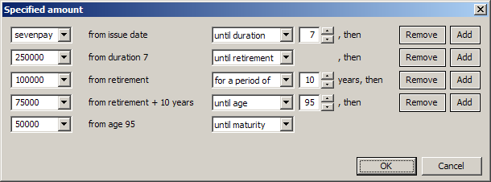

Sometimes input amounts need to change from one year to the next.
You see this button at the right end of each field that can vary by duration. Press it to enter a sequence of values. A dialog like this pops up:

You don’t have to remember keywords like sevenpay and retirement—just pick them from the drop-down lists.
When you click OK, the dialog closes, and you see the sequence in a compact mathematical form:
sevenpay 7; 250000 retirement; 100000 #10; 75000 @95; 50000
If you wish, you can enter sequences in that form yourself. Here’s how.
When values change every year, separate them with semicolons. If the face amount starts at $100,000 and goes up $10,000 every year for five years, type
100000; 110000; 120000; 130000; 140000; 150000
The last value repeats until the end, as you’d expect. It doesn’t “run out of numbers” and drop to zero. In this case, the face amount stays at $150,000 until maturity.
You can type spaces if you like, or leave them out. But don’t write a dollar sign, and don’t separate thousands with commas. Not every country uses dollars, and some write a comma after every fourth digit.
Values can vary even if they aren’t numbers. For instance, a payment mode of
annual; monthly
means annual in the first year, and monthly thereafter.
Suppose you want to pay a $10,000 premium every year for the first twenty policy years, and then stop. You don’t have to type the number twenty times. Just say
10000 20; 0
Remember to put a zero at the end, because the last value repeats.
To pay $10,000 a year for the first ten policy years, then $5,000 a year until the end of the fifteenth year, type
10000 10; 5000 15; 0
You may want to enter payments that depend on attained age. Type
10000 @70; 0
to pay $10,000 every year until age 70. You can even make that the default payment pattern for a whole group. It means a different number of years for different issue ages. Or you can make the pattern use retirement age: type
10000 retirement; 0
to pay $10,000 until retirement. To take a $5,000 withdrawal each year after retirement, type
0 retirement; 5000
You can also say
0 retirement; 5000 maturity
if you want to spell it all out.
Sometimes you want a value to apply for a certain number of years. Type
0 retirement; 5000 #10; 0
to get a withdrawal of $5,000 for ten years, no matter when retirement starts.
As that example shows, you can mix different ways of saying what periods of time you mean. Read it piece by piece:
0 retirement
means “zero until retirement”, and then
5000 #10
means “$5,000 a year for the next ten years”.
Whatever way you enter a sequence, error messages show it in a standard mathematical notation:
You can use that notation yourself if you want. For example, you can write the last example above as
0,[0,retirement);10000,[retirement,#10);0
Remember:
Copyright © 1998, 1999, 2000, 2001, 2002, 2003, 2004, 2005, 2006, 2007, 2008, 2009, 2010, 2011, 2012, 2013, 2014, 2015, 2016, 2017, 2018, 2019, 2020, 2021, 2022 Gregory W. Chicares. This program, including its documentation, is free software. Read the terms under which you can redistribute and modify it.
Maintained by Gregory W. Chicares. The latest version of this file can be found at the lmi website.